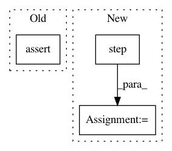

230503ac56636d91d53d728c247c6ea3d096eeb9,tf_agents/environments/tf_py_environment_test.py,TFPYEnvironmentTest,testTwoStepsDependenceOnTheFirst,#TFPYEnvironmentTest#Any#,250
Before Change
self.assertEqual([2], time_step.observation)
self.assertEqual(1., time_step.reward)
self.assertEqual(0., time_step.discount)
self.assertEqual(np.array([0]), step_data)
self.assertEqual([1, 2], py_env.actions_taken)
@parameterized.parameters({"batch_py_env": True}, {"batch_py_env": False})
def testFirstObservationIsPreservedAfterTwoSteps(self, batch_py_env):
After Change
time_step = tf_env.current_time_step()
with tf.control_dependencies([time_step.step_type]):
action = tf.constant([1])
time_step = tf_env.step(action)
with tf.control_dependencies([time_step.step_type]):
action = tf.constant([2])
time_step = self.evaluate(tf_env.step(action))
In pattern: SUPERPATTERN
Frequency: 3
Non-data size: 3
Instances
Project Name: tensorflow/agents
Commit Name: 230503ac56636d91d53d728c247c6ea3d096eeb9
Time: 2018-11-30
Author: sguada@google.com
File Name: tf_agents/environments/tf_py_environment_test.py
Class Name: TFPYEnvironmentTest
Method Name: testTwoStepsDependenceOnTheFirst
Project Name: tensorflow/agents
Commit Name: 230503ac56636d91d53d728c247c6ea3d096eeb9
Time: 2018-11-30
Author: sguada@google.com
File Name: tf_agents/environments/tf_py_environment_test.py
Class Name: TFPYEnvironmentTest
Method Name: testOneStep
Project Name: reinforceio/tensorforce
Commit Name: ee950b503eeed5aca3747a4bcf2a40f624b743a0
Time: 2019-01-21
Author: alexkuhnle@t-online.de
File Name: tensorforce/core/optimizers/synchronization.py
Class Name: Synchronization
Method Name: tf_step